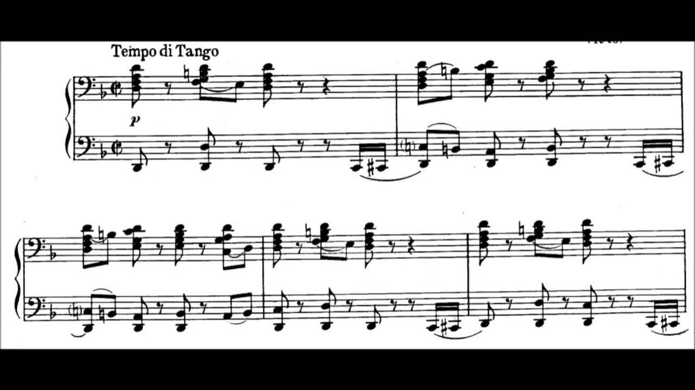
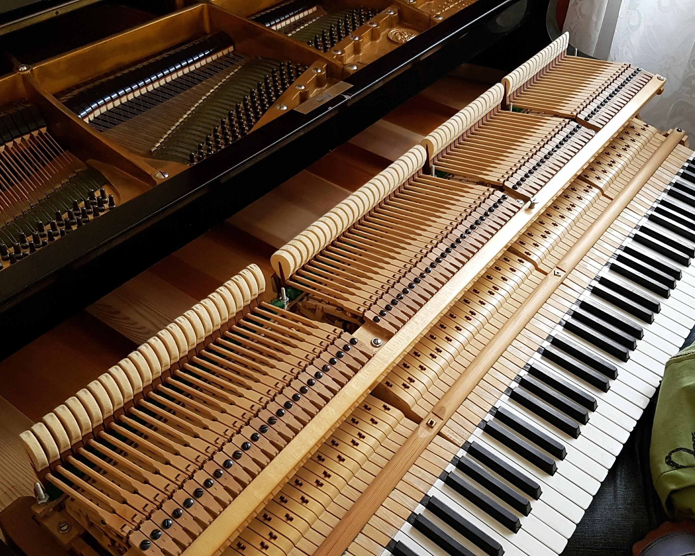
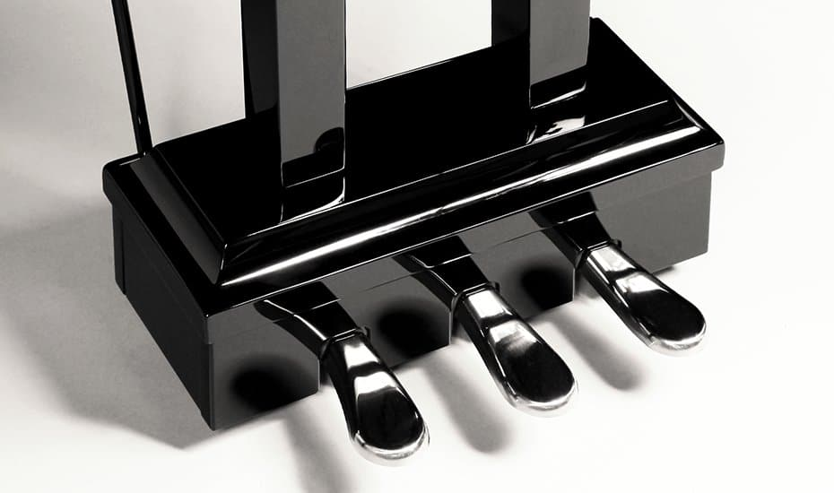
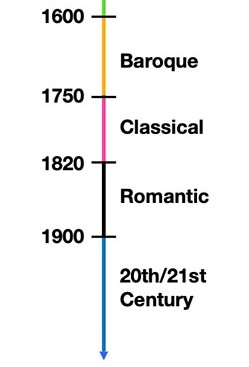

Here are some pictures that I think connect to playing the piano, and some fun facts about music in general.
|  |  |  |  | |
This is some sheet music used for reading music |
This is the inside of the piano. When the key is pressed it causes a hammer to hit a certain string which produces the sound |
The pedals on the piano. The right most one, sustains all the notes you press making the sound more dramatic. The middle most pedal sustains only first notes played, and doesn't sustain anything else. The left most pedal makes the sound softer, by shifting the hammers in the piano a little to one side, so that they only strike a 2 strings instead of 3. |
These markings are instructions for how loud or soft you should play the notes at a certain part of the song. Mp means medium soft, and Mf means medium loud. |
These are some of the different time periods in music. |